Immigrating to America from Sao Paulo, Brazil when I was just a bun in the oven, the stress and schedule of being a working mom prevented her from sustaining my language lessons and English quickly took over as I began my formal education in a traditional American school. As a result, I have never been able to communicate with my Brazilian family without my mother by my side as translator. A frustrating handicap that leaves me feeling disconnected from my heritage and the people I love.
Yet, I am not alone in my experience.
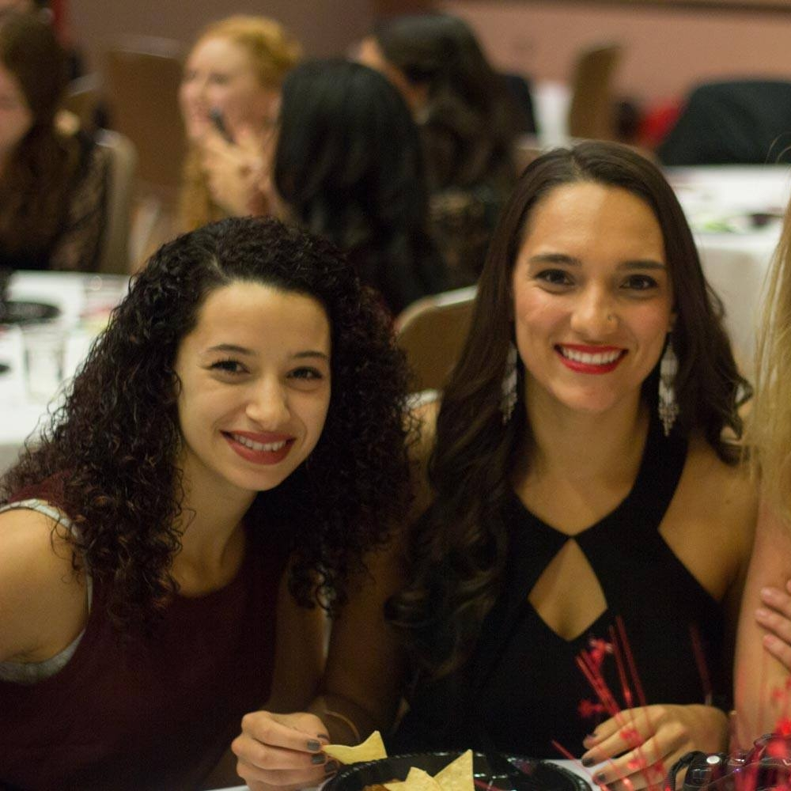
Dina
Durham, NC
Parents – Egyptian
Lorraine
Toronto, Ontario
Parents – Chinese
Mindy
Raleigh, NC
Parents – Chinese
Lena
Michigan
Mother – Puerto Rican
View quotes by selecting a photo above
“I was born in the states but my parents and their families are from Egypt. I sorta rebelled against learning Arabic as a kid and that made it super tough to communicate with my family overseas. ”
“It feels pretty terrible when [my grandparents] speak a string of sentences to me, animatedly with their hands, and I can only stare at them blankly, smile, and nod. ”
“I can still speak a small bit of [Taishanese], enough to get by basic ideas but I can't hold a conversation with [my grandparents] ”
“There is a tribe of us, of second and third generation, of mixed halves and quarters, who have a language that lives in their tongue, sits like a thin film on their skin, but doesn’t function quite the way language is supposed to.”
Stories of Second Generation Americans
In hopes of better understanding my own struggles with learning Portuguese and how it has affected my relationship with my family abroad, I conducted interviews with second-generation Americans (ages 19-24) about the language barriers they faced within their families. While some of were more proficient in their second languages than others, all of them shared similar sentiments of frustration, dissapointment and embarassment when struggling to communicate with their loved ones.
Design Challenge
How can distant generations stay connected without the use of traditional language?
Breaking down the message
How different cultures express and define affection
After beginning my initial research I quickly realized that the psychology of language learning was too complex to tackle efficiently in the time allotted which is why I choose to focus on bypassing the language barriers altogether. Instead of focusing on the words family members use amongst each other, I wanted to better understand the emotions those words were meant to convey and how different cultures define or express those emotions.
Cimanje: Bosnia
Dajana recalls the tradition of cimanje (cee-man-ye) prevelant amongst Bosnian youth in the 00's.
As a way of letting someone know you were thinking about them, teens like Dajana would use their Nokia flip-phones to call a friend, or special crush, one time and then immediately hang up. The missed call serving as a small sign of affection without having to say anything (or spend any precious cell phone minutes).
Tsunagari-Kan: Japan
Tsunagari-Kan is Japanese word that indicates a sense of closeness to others. Tsunagari-kan means a kind of collective feeling that includes not only momentary and direct feelings, such as joy and pleasure offered by communication with one or more persons, but also emotional feelings such as familiarity, affinity and fellowship. The ways in which it is engendered amongst Japanese families was analyzed by a group of researchers in the late 90s and offers a fascinating look at how non-verbal communication contributes to ones sense of belonging.
Tsunagari-Kan Planter Experiment
The Tsunagari-Kan Planter Experiment was conducted by Japanese researchers as a way to evoke thoughts about others in users’ minds and at engendering tsunagari-kan with situational cues and signs, even when the individuals were in separate locations. The experiment is fascinating in how it evaluates the kinship of the family and I highly recommend reading the full review.
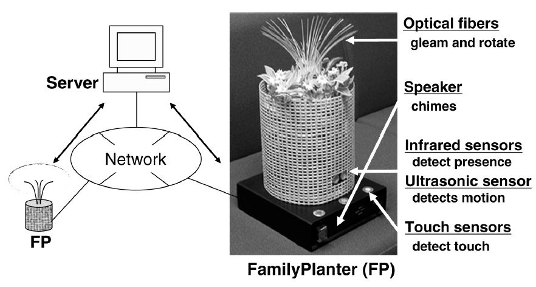
How it Worked
One "family planter", FP, was placed in the house of a grandmother and then in the house of her eldest daughter (who lives with her husband and daughter). Each time an individual passed their planter, the optical fibers of the other planter would gleam and rotate in response. If an individual touched the planter a subtle tone would play on the other planter.
Experiment Theory
In an effort to replicate the experience of situational cues (a smile) and touch cues (a hug) that family members use in order to express affection the planter provided feedback that was both passive (the lights gleaming) and active (the touch of the frame resulting in a chime). This way each of the tested families could choose their level of interaction with the planter and the researchers could investigate if, through these interactions,:
1 - Thoughts were evoked
A receiver who gets motion cues: interprets them positively, gets mental images of the other party and feels his or her presence.
2 - Thoughts lead to emotion
The interpretation arises repeatedly, with the result that human relationships are kept and fostered.
Experiment Results
The experiment found that the planter actually did manage to engender feelings of tsunagari-kan amongst family members, especially the elderly. In the same way that a smile from a loved one creates a shared moment of kinsihp, the planter was able to evoke this same emotion through a shared understanding of the chime's meaning.
This study was an incredible turning point in the progresion of my project. It not only showed that messages of affection could be shared without verbal language, but also validated that these messages don't have to rely on physical proximity.
A New Signal
Refocusing the challenge
What I took away from the experiment was that it turned the ambigious signal of a chime into a sign for affection. Therefore, how do I create a new signal that both elderly and younger users could use in order to notify their loved ones that they are thinking about them? Inspired by the planter and the trends towards IoT devices I decided that the best solution would be some sort of physical product that multiple users could interact with. I needed to create a new signal and then develop a physical product that would allow a user to send and receive that signal.
Project Mantras
Meaning of messages is malleable
signal must be intuitive but it’s meaning can develop overtime
Design should be as unintrusive as possible
signal should call the user's attention naturally and then shift back to periphery
Solution should be asymmetrical
the way in which signals are sent and received can differ to accomodate different user
Technological Restrictions
After honing on these mantras I also set the restriction of plausibility. I could take some liberty with the actual implementation but I wanted to at least be able to build a functioning prototype of whatever I decided to design, as the limitations of the technology would hopefully inform the design of my system. This caused some struggle in the progression of the project as shown in the next section of failures. I figured I would need to learn either Arduino or Raspberry Pi
Ideation
Ideation Problems
In many of my initial ideations I became too focused on creating physical devices that would integrate seemlessly into the lives of older and younger users. However, once I finally tapped back into my mantra of an "asymmetrical solution" did I realize that it was the older users who would gain the most benefits more from a physical device, and I should take advantage on the tech-savvynes of the millenial users.
The Solution
To get over this roadblock I asked myself the simple questions: What my grandmother naturally does whenever she is thinking about me? What do I do when I am missing my grandmother? Look at pictures! Truely revolutionary (I know) but the truth is that whether printed or uploaded, photos are the ways in which we recall our loved ones so my solution should encourage and embrace that behavior.
A Frame
for the elderly user
An App
for the millenial user
A Light
as the signal
Defining the Signal
Sending & Receiving
The Glow
In this new system, the "glow" of the frame is the signal that someone is thinking about you. The chime and the missed call notification from the research didn't seem quite warm enough. I wanted to increase that subtle 'ahh' feeling and felt that the soft glow of a lit frame would do just that. The glow can be sent from the app to the frame and from the frame to the app (explained in detail later).
The Photo
In my initial system design, one family member could purchase the frame for another and choose which photo would be printed and displayed. However, some early brainstorming sessions with user groups highlighted the benefits of having a digital frame that could holds multiple photos. Photos can be sent to the frame the frame owner can utilize the touch screen to select a new photo.
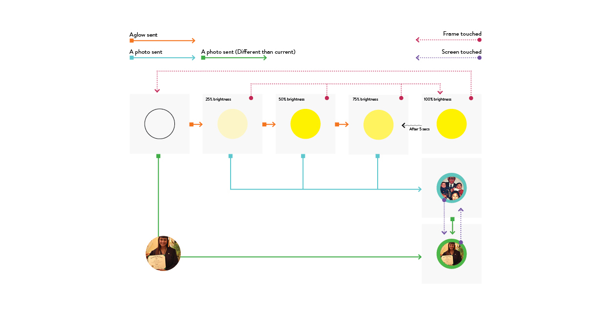
Interaction Diagram
The diagram above explains how the frame will react when sent a glow or a photo from the app; as well as when the app receives feedback. I spent a lot of time refining this flow to ensure that the signals were prevelant on both sides but not intrusive.
Interactions from App:
1. Send a glow to the frame - turn frame on or increase brightness
2. Send a photo to the frame - change the photo and the light color.
Interactions from Frame:
1. Tap the frame - sends a signal to the app
2. Touch the screen - sends a signal to the app
Building the Frame
Adventures in sawdust and soldering
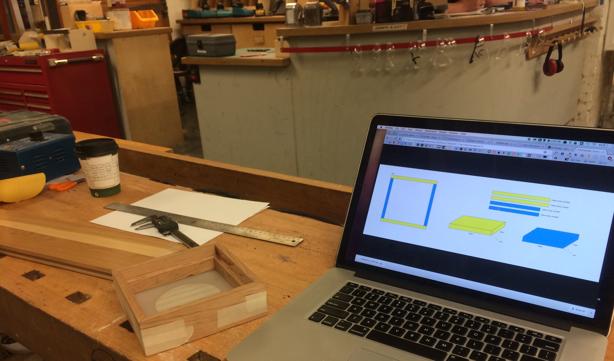
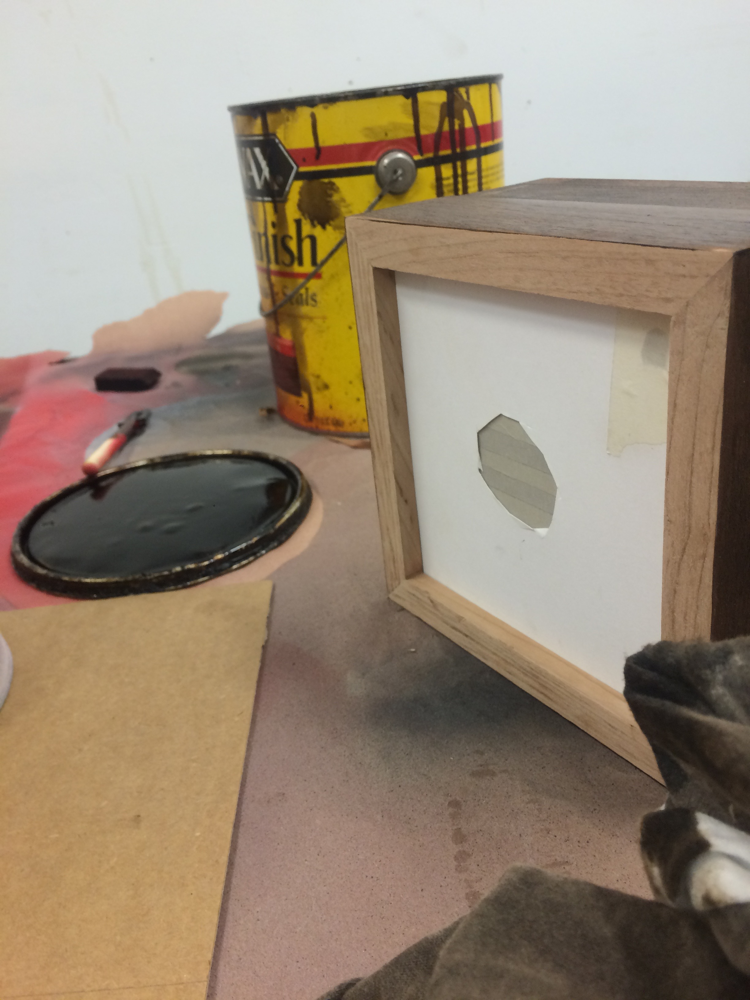
Testing Sizes
I sketched out a few ideas with the help of my industrial design friends to figure out the best dimensions.
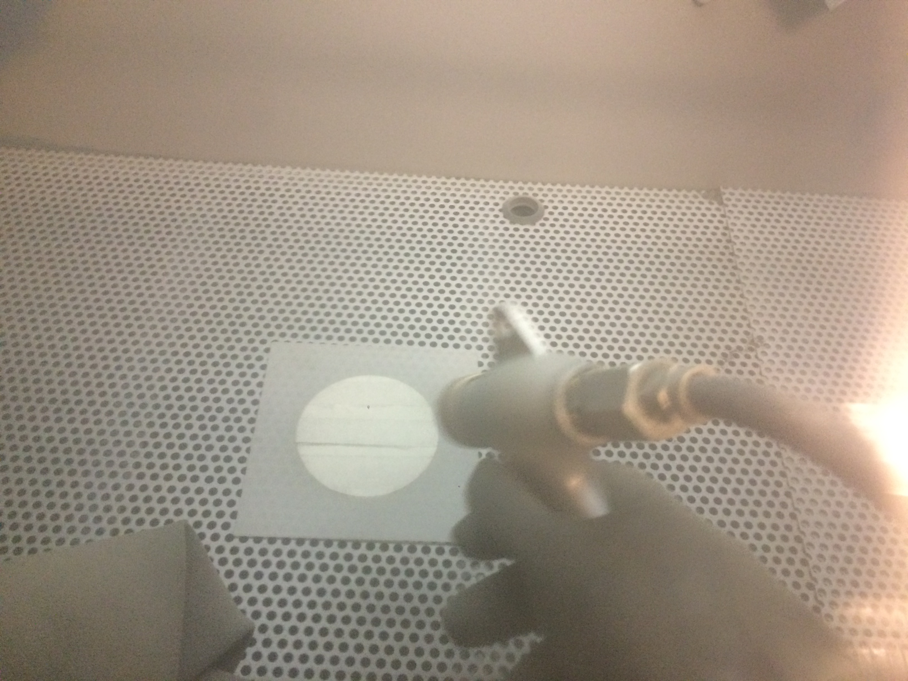
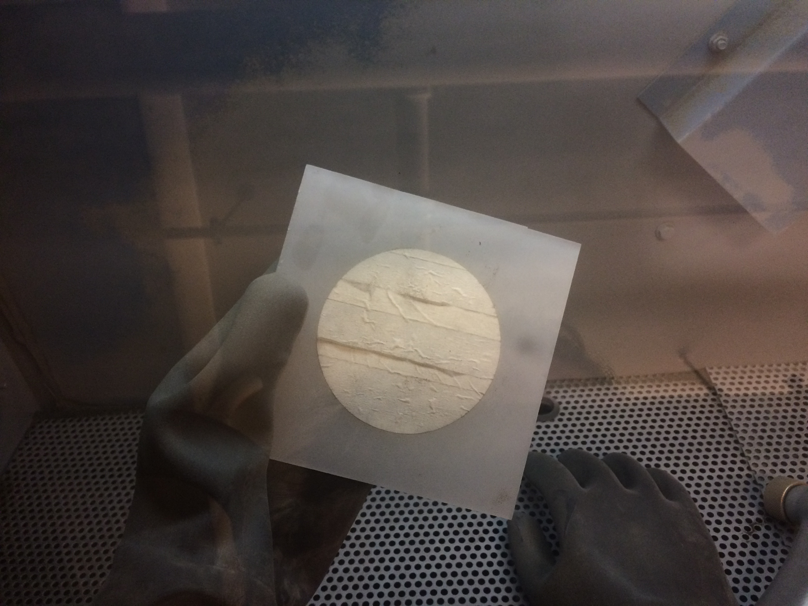
Frosting the Glass
At first I had planned to put a sheet of frosted paper or window film to dull the light, but then decided that frosting the glass itself would produce the nicest effect.
Assembling the Arduino
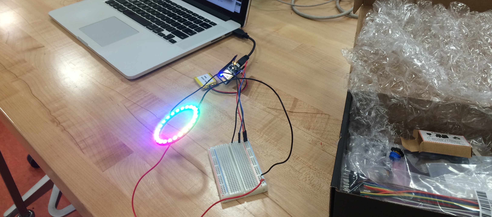
Prototyping
I tested out the different possibilities of the NeoPixel ring (powered by Arduino) and then tested out different depths to determine the best position for optimum brightness.
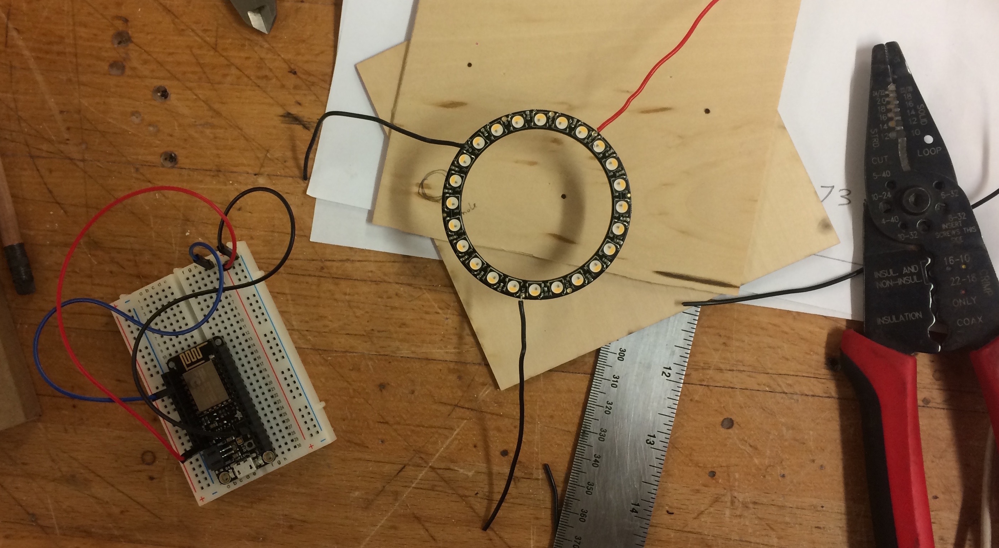
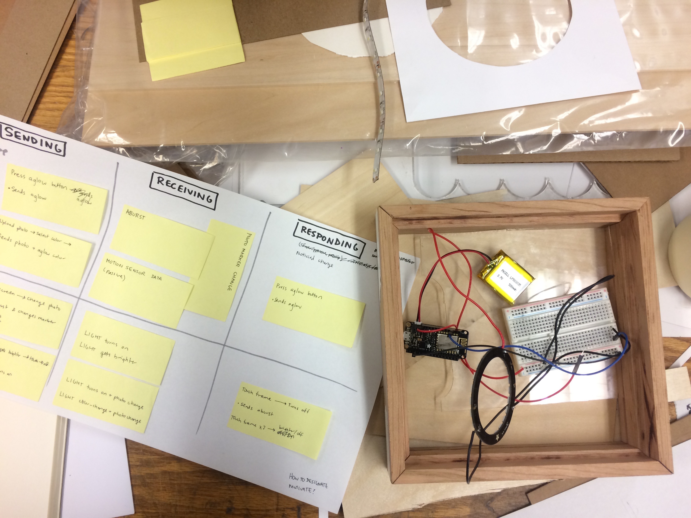
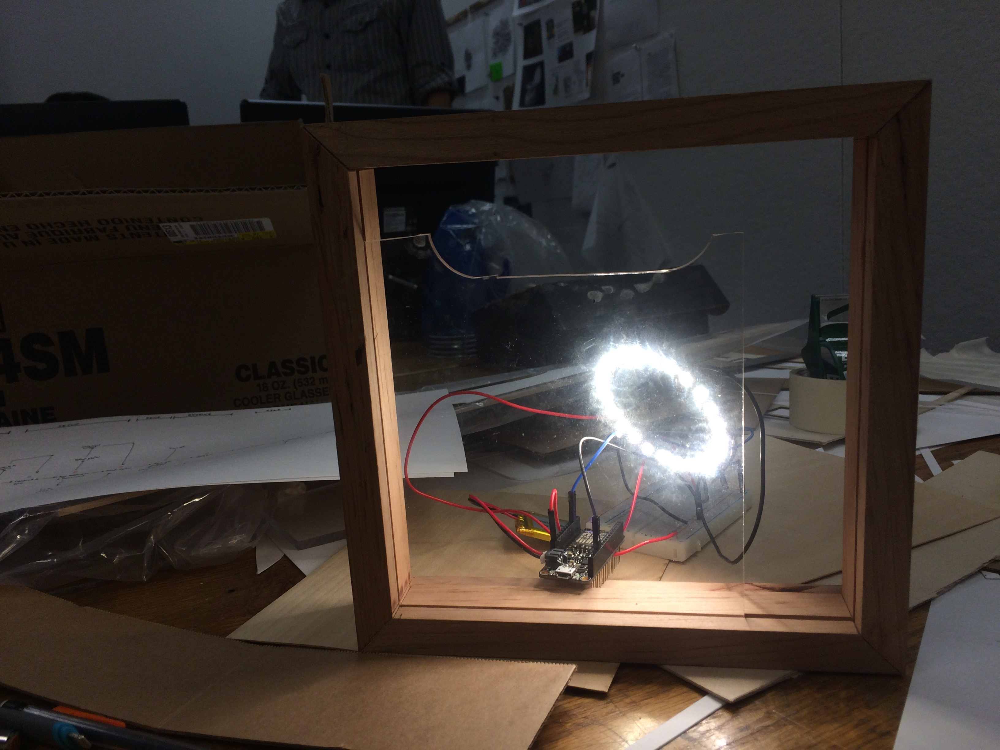
Finishing and Polishing
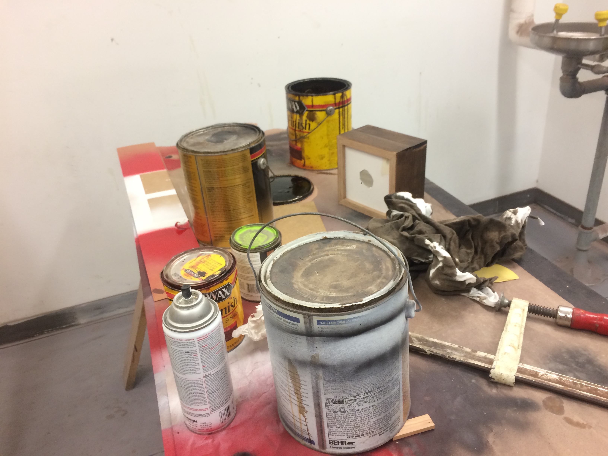
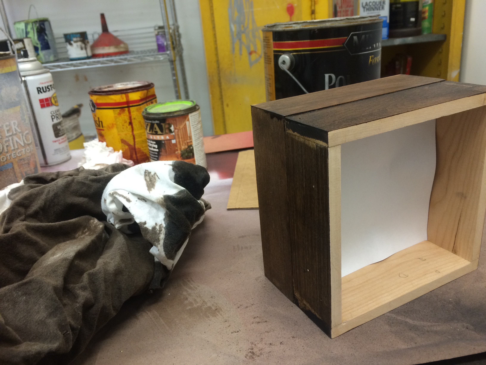
Designing the App
User Testing
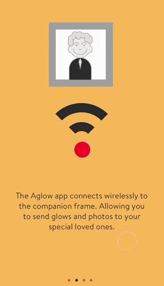
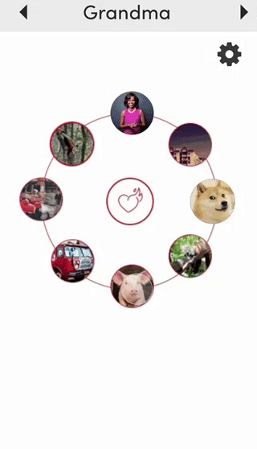
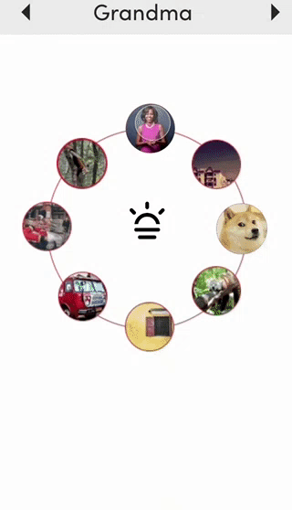
I wanted the interactions within the app to be delightful and surprising to the user while also ensuring that the main interactions where clear from the beginning. To properly portray these interactions, I mocked up the basic taskflows in Principle and then asked test participants to complete those tasks and provide verbal feedback.
Positive Feedback
Most users understood the "dial" interface and how to delete photos. The flow of the onboarding was also delightful and caused many users to swipe back and forth a few times before continuing on to the home screen
Negative Feedback
When asked to replace an existing photo with a new photo, the lack of a central "add" button caused confusion. Also, in order to preview a photo, users would have to drag the photo to the circle and then release it before the loading began. This was difficult to get across and a lot of users accidently sent photos.
Aglow
A new notification for affection
After many trials and tribulations all the pieces came together for the final product. Watch the video below for a full walkthrough of the interaction and some more screen shots of stuff.
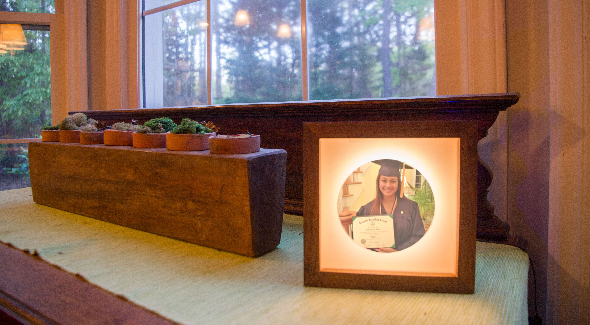
Final Video Yall
This video explains the interaction from the perspective of Diya and Ellen.